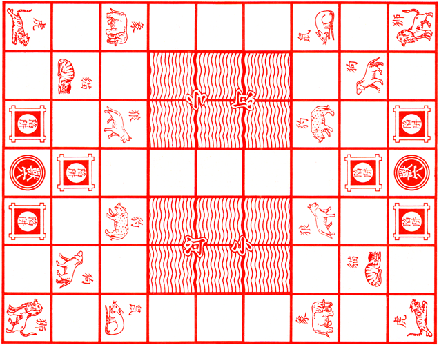

Short Bio:
Currently a 4th Year Bachelor of Science Major in Software Technology and Minor in Data Science student of De La Salle University.
Data Projects
These are the projects that I am currently working on and I have worked on in the past.Ongoing Projects
These are my ongoing projects
Particle Simulation
A particle physics simulator made using Java. A user could add particles to the canvas, add walls, which the particles will bounce off of. This project is made to learn load management as when rendering the canvas, the frame rate should not drop when updating the environment. Created as fulfillment for a requirement in Parallel and Distrubuted Computing course.
Link:  GitHub Repository
GitHub Repository
GitHub Repository
Modeling the Driving Behavior of UV Express in Mixed Traffic Scenarios
The Philippines is a developing country that is currently undergoing rapid urbanization. Along with rapid urbanization comes the problem of worsening traffic congestion. There have been multiple studies where traffic models have been used to optimize traffic conditions and policies. Models have also been used to test and guide in developing policies and solutions. Among the para-transit vehicles roaming its roads, UV Express is one of the most popular and used ones. While multiple models were made for different driver behaviors and vehicles, UV Express driver's behavior has not yet been modeled. This study aims to collect real-world data and use it to create a model, specifically using the Hidden Markov Model, and simulate it in Simulation of Urban MObility (SUMO).
Behind the Screens: Exploring the Key Factors Behind Channel Success and Disparities
YouTube accommodates a diverse range of content creators, all striving for success and recognition. However, aspiring and existing YouTube content creators face significant challenges in understanding the factors contributing to channel success and disparities among channels. An interactive visualization application presents an opportunity to address these challenges by offering insights into the dynamics of existing top YouTubers.
Past Projects
Feel free to check my completed projects

Animal Chess
An implementation of the Jungle strategy board game/Dou Shou Qi in Java utilizing object-oriented programming concepts. It is a two player strategy game where the gameboard represents a jungle terrain with dens, traps and rivers, each player controlls eight pieces representing animals of different rank and each piece can "eat" a lower-ranking piece, and to win, a player must reach the opponent's den with a piece or capture all of the opponent's pieces. Created as a project for Object-Oriented Programming course
Link: GitHub Repository
GitHub Repository
UNIDA Church Member Management System
A Customer Relationship Management Application using NodeJS for a church in Imus, Cavite. The program can be used to monitor and manage the churchgoers' status (such as baptism staus) and track attendance in church activities. Created as a project for Software Engineering course.
Link: GitHub Repository
GitHub Repository

Flood Hazard Levels of Colleges and Universities in the City of Manila
Manila houses the University belt, an area in the city where multiple well-known schools, colleges, and universities are concentrated. The visualization aims to know and visualize colleges and universities exposed to flood hazards in the city, how many colleges and universities in Manila are exposed to flood hazards, and how many schools are exposed to these flood hazards per district. Created using QGIS as a fulfillment for a requirement in Geospatial Mapping and Analytics course.
 Visualization 1
Visualization 1 Visualization 2
Visualization 2 Visualization 3
Visualization 3 Visualization 4
Visualization 4
Unveiling Road Safety Dynamics: Analyzing Factors Influencing Traffic Casualties and Forecasting Severity
This project aims to decrease the overall number of accidents through proposal of policy changes derived from our insights, focusing on factors under our control, for instance, advocating for increased signage during specific times or in particular areas, as well as augmenting police presence during identified high-risk periods; and development of a predictive model to determine the severity of an accident based on weather conditions. Created for fulfilling the final project requirement for Principles of Data Science course.
Link: GitHub Repository
GitHub Repository

STINTSY Major Course Output - Garments Dataset
The Garments industry is a highly labor-intensive industry. To satify the high global demands, the output of this industry is highly dependent on the production and delivery performance of the employees. Due to this, to better understand and improve the productivity of the manufacturing processes, it is important that we analyze the process and performance of the workers to be able to predict actual productivity outputed by the workers in the process. This project aims to conduct regression analysis to predict the actual productivity of workers given the data. An overview for how much each attribute affects the actual productivity will further be explored. Created for fulfilling the final project requirement for Advanced Intelligent Systems course.
Link: GitHub Repository
GitHub Repository